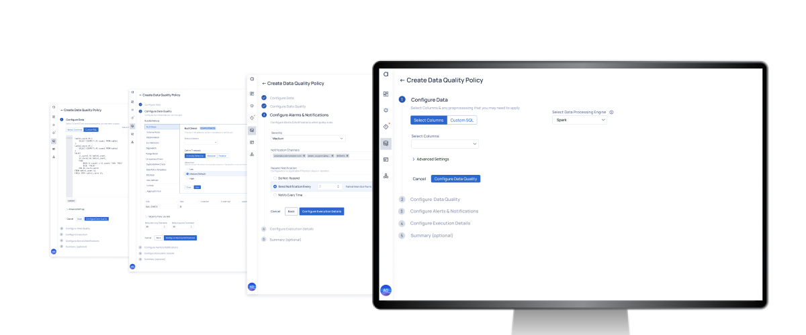
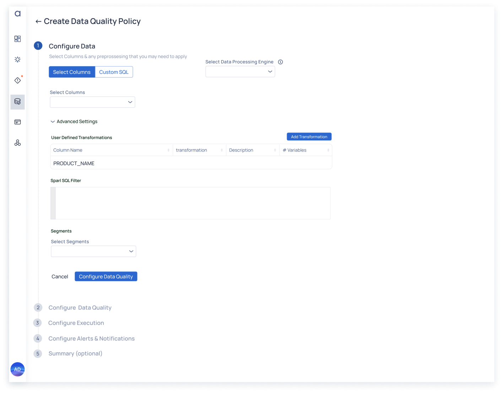
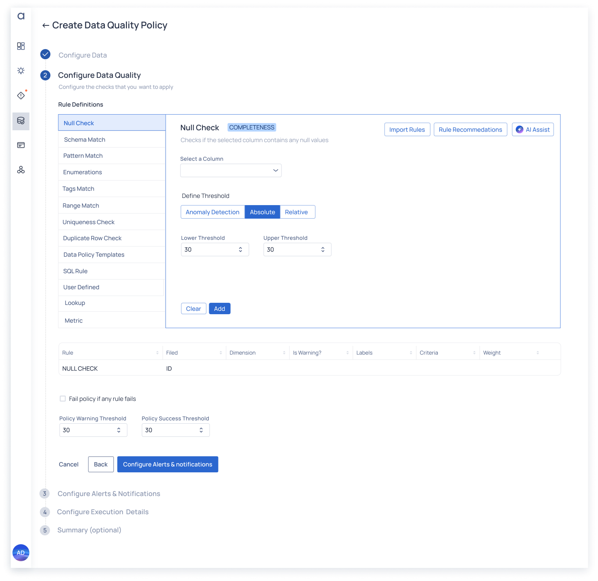
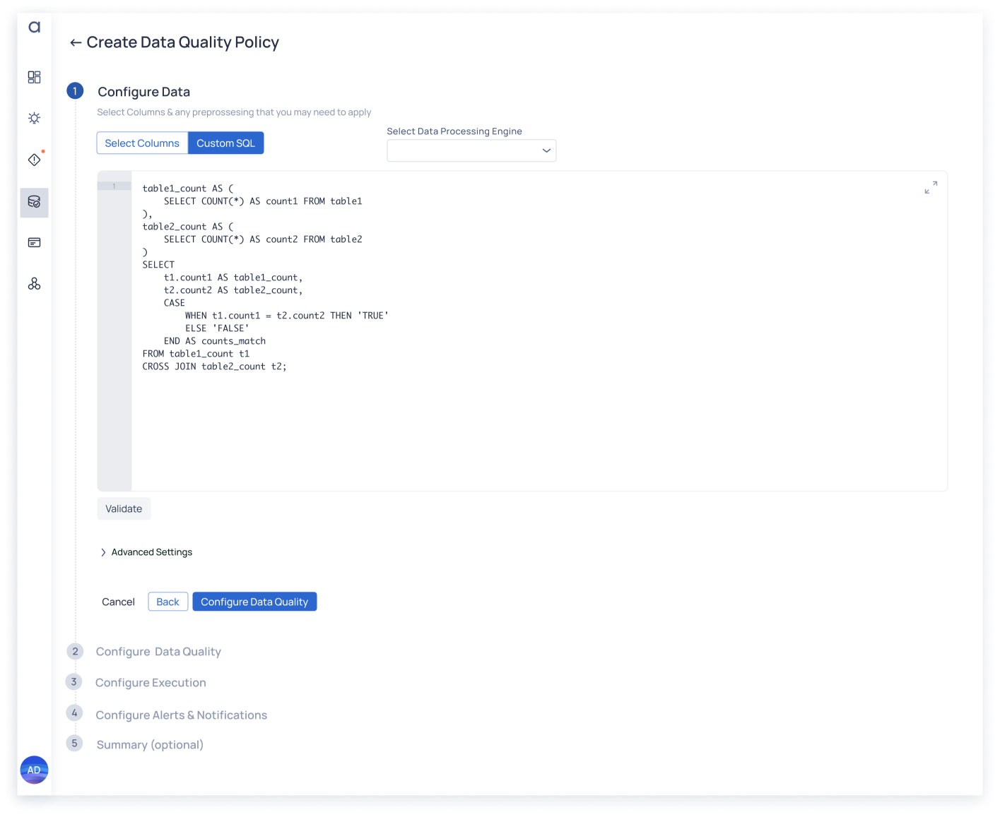

Policy Workflow Optimization
Data Reliability focuses on the creation, execution, and review of rules and policies. However, the current process presents several points of friction, such as scattered navigation, inconsistent user experiences, and inefficient workflows. Addressing these issues is essential to improve clarity, usability, and customer satisfaction while ensuring seamless policy management across ADOC.

Contribution: Principle UX Designer, Interaction Design
Target Users: Data Engineers and Operations Teams
Products: Data Observability Platform
Outcome: With the streamlined interface and reusable rule library, customers reported significantly faster adoption of pre-defined rules tailored to their needs, reducing setup time by nearly 50%. This improvement not only boosted productivity but also ensured more consistent application of data quality standards across their organizations.
Solution Summary
The initiative aims to streamline navigation, enhance the integration of AI capabilities, and simplify policy creation through reusable rule libraries and intuitive interfaces. Key milestones include improving navigation to eliminate unexpected pages and dead ends, integrating AI-driven recommendations and natural language interfaces (NLI) into policy creation, and building a reusable rule library to simplify workflows. These improvements will reduce the learning curve, enhance SQL monitoring capabilities, and eliminate inefficient workarounds, ensuring a user-friendly and powerful experience.
Target Users
The primary target users for this solution include Data Engineers, who benefit from simplified rule and policy management alongside native SQL monitoring directly tied to original assets, enabling greater efficiency and control. Data Quality Analysts leverage streamlined workflows and AI-driven recommendations, making policy creation faster and more effective.
Key Features
The completed solution introduced streamlined navigation, eliminating scattered entry points and duplicate policy execution pages while ensuring intuitive and consistent navigation paths. Enhanced AI integration brought AI-driven recommendations and natural language interfaces (NLI) into policy creation workflows, making them more intelligent and user-friendly. A reusable rule library was implemented to simplify policy creation, enabling users to adapt pre-defined rules with ease. SQL monitoring now provides native capabilities tied directly to original data assets, offering greater transparency and control. The solution also achieved competitive parity, matching and exceeding competitors in policy flexibility and SQL capabilities to deliver a leading-edge user experience. These enhancements empowered users to define policies intuitively, reduced the learning curve, and streamlined data reliability workflows, ensuring improved clarity, usability, and operational efficiency.


Approach
Our user interview process was constrained by a limited customer base and the sensitivity of their data practices. Despite this, we engaged a select group of data engineers and data analysts to gain valuable insights. Users were segmented based on their roles, responsibilities, and self-reported interactions with the product. To guide the interviews, we developed a semi-structured interview framework that focused on uncovering pain points, analyzing workflows, and identifying unmet needs specific to policy workflows and data observability.
We conducted one-on-one interviews remotely, utilizing screen-sharing tools to observe users interacting with the product in real time. To respect confidentiality and the sensitivity of their data, sessions were not recorded. During the interviews, we encouraged participants to verbalize their thoughts, frustrations, and decision-making processes as they navigated through tasks.
Improve the data policy creation workflow by updating interactions and page layout. The current workflow quickly becomes difficult to manage: Users have to configure multiple rules in one part of the UI while feedback and advanced settings builds in a separate, disconnected area of the UI. The dynamic nature of the growing list further complicates this process. In cases where many (~1000) rules can quickly make the list of built rules unwieldy. Create a new workflow and layout to better manage the steps necessary to build complex policies and rules. This new layout and set of interactions should account for future Bulk interactions and applicability The new UI should better associate the action and feedback of creating rules and policies The new UI should prevent unmanageable scrolling events and keep immediate feedback within view The new layout should also improve the legibility of each section and the objectives in the policy creation process. Hierarchy will be created with typoagraphy and blocking of UI components
Heuristic Evaluation
The following issues, observed during the evaluation of the product’s design, highlight significant usability problems. These are analyzed against heuristic usability principles (e.g., Nielsen’s Heuristics) which we used to identify the most egregious concerns to suggest UX improvements.

Original ADOC Data Quality Configuration page.
1. Poor Visual Hierarchy
Heuristic Violation: Aesthetic and Minimalist Design, Visibility of System Status
The interface lacks a clear visual hierarchy, with the most important details buried at the bottom of the page and less critical information displayed prominently at the top. This misalignment forces users to hunt for relevant information, increasing cognitive load and task completion time.
Improvement: Rearranged elements to prioritize critical information at the top of the page, supported by visual cues like headings, bold text, and spacing to guide user focus.
2. Poor Feedback Mechanisms
Heuristic Violation: Visibility of System Status, Error Prevention
Feedback is either insufficient or located outside the visible area, leaving users uncertain about whether their actions were successful or if an error occurred. Both are occuring in the original implementation. This often resulted in repeated actions and user frustration.
Improvement: Ensure feedback (e.g., confirmations, error messages) is immediate, visible, and contextually tied to the relevant action. We chose to use inline validation and toast messages for updates in addition to significant layout changes to maximize the workable area above the fold.
3. Hidden or Partially-obscured Workspace
Heuristic Violation: Flexibility and Efficiency of Use
Much of the primary workspace was obscured by one-time interaction inputs and metadata that lose relevance after the initial review. This disrupts the user’s focus and workflow.
Improvement: Relocated secondary information and basic form inputs to collapsible sections at the end of the workflow, where they are most relevant. This adjustment prioritizes primary components, keeping them front and center during critical tasks for improved focus and efficiency.
4. Unclear Call to Action (CTA)
Heuristic Violation: Match Between System and the Real World, Recognition Rather Than Recall
Call-to-action buttons were poorly positioned with unclear labels, making it difficult for users to identify the next steps.
Improvement: Enhanced the workflow by implementing clear, descriptive labels and structured guidance to help users navigate tasks effectively. Added section labels to distinguish between required and optional steps, and introduced a stepper with numbered stages to provide a clear roadmap for completing the workflow.
5. Poor Flow and Section Dependencies
Heuristic Violation: Consistency and Standards, User Control and Freedom
The workflow lacks clear communication about section dependencies, causing confusion about what needs to be completed first or how sections interact. Users often overlooked required steps or dependencies, leading to feeling overwhelmed, confused, or failure to complete in the worst cases.
Improvement: Organized the interface into distinct sections, offering users a sense of progress and completion, with prominent labels directing them to the next actions. Sections that were completed were subtly obscured, while irrelevant sections were hidden until needed. The workflow culminates in a prominent final CTA to finalize the process, ensuring users remain focused and confident throughout their journey.
Additional Observations and Recommendations:
Heuristic Violation: Consistency and Standards, User Control and Freedom
- Labels were ambiguous or missing, leaving users unsure of the purpose of fields or actions. We used descriptive, consistent labels aligned with user terminology.
- Once a policy is completed, users could not make edits, violating flexibility principles. We added editing, versioning, and additional safeguards (e.g., version history and confirmation prompts).
- The absence of guidance or tooltips left users without support. We added contextual help (e.g., tooltips, “?” icons, and inline documentation).
- Action buttons were not easily visible, which reduced task discoverability. We defined consistent button positioning and show/hide functionality to ensure they are visible within the workflow context.
The redesign prioritized clarity, efficiency, and scalability, incorporating key features such as a dedicated SQL workspace, improved navigation, and enhanced feedback mechanisms. By introducing structured workflows, visual indicators, and collapsible sections, the new design aimed to simplify complex tasks while maintaining ease of use for all users. The following steps outline the key actions taken to achieve this transformation.
Streamlined the Workspace
- Moved metadata to the bottom of the form, placing it near the summary and steps for form completion to create more room for the main workspace.
- Inputs were relocated to collapsible or secondary sections, keeping the primary workspace clean and focused on immediate actions.
- Introduced a numbered stepper and sequential workflow design to clearly communicate section dependencies and guide users through logical progressions.
- Sections remain collapsed by default, reducing visual clutter and making the interface less overwhelming. Users expand individual sections only when needed, allowing them to focus on specific tasks while maintaining a clear view of the overall workflow.

Improved Feedback Mechanisms
- Made feedback, such as success messages and error notifications, immediate, prominently displayed, and contextually tied to the relevant interaction.
- Prevented feedback from appearing outside the visible area by implementing inline validation and toast notifications.
- Established a clear visual hierarchy using font size, weight, color, and alignment to emphasize key sections and actions.
- Structured the workspace to be more intuitive and organized, reducing cognitive load and enhancing usability.

Optimized for Diverse Personas
- Created a refined, prominent workspace specifically for writing custom SQL expressions, providing power users with a focused and efficient environment for advanced tasks.
- Made feedback, such as success messages and error notifications, immediate, prominently displayed, and contextually tied to the relevant interaction.
- Prevented feedback from appearing outside the visible area by implementing inline validation and toast notifications.
- Established a clear visual hierarchy using font size, weight, color, and alignment to emphasize key sections and actions.
- Structured the workspace to be more intuitive and organized, reducing cognitive load and enhancing usability.

Use Cases and Outcomes
With the streamlined interface and reusable rule library, customers reported significantly faster adoption of pre-defined rules tailored to their needs, reducing setup time by nearly 50%. This improvement not only boosted productivity but also ensured more consistent application of data quality standards across their organizations.
Additionally, the integration of AI-driven recommendations and natural language interfaces (NLI) reduced the learning curve for data quality analysts, who often lacked advanced technical expertise. By simplifying workflows and automating key steps, the analysts were able to focus on identifying actionable insights rather than troubleshooting configuration issues. This streamlined approach led to faster deployment of data policies, improved operational efficiency, and minimized downtime caused by data reliability issues.
The cumulative effect of these enhancements was improved data governance and higher-quality data pipelines. Teams were better equipped to maintain data integrity while scaling operations, enabling the business to make more reliable, data-driven decisions with reduced operational overhead.
 Data Prep for AI-Driven Enterprises
Data Prep for AI-Driven Enterprises Mobile Data Observability
Mobile Data Observability Copilot for Augmented HR
Copilot for Augmented HR Cross-platform Recommendations
Cross-platform Recommendations Copilot Observability Experience
Copilot Observability Experience